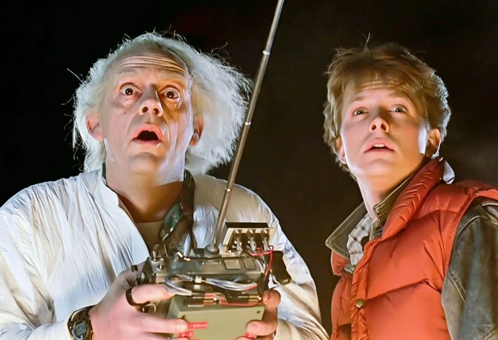
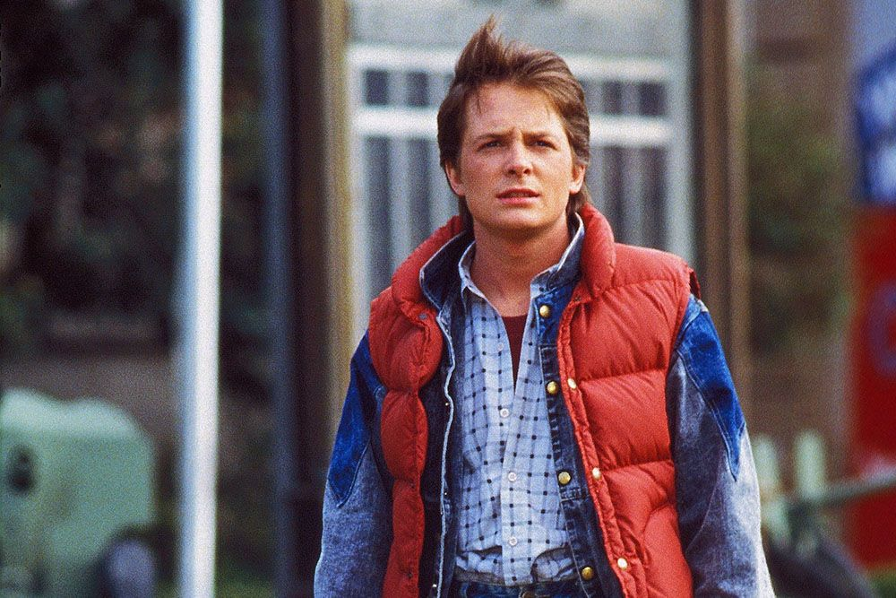
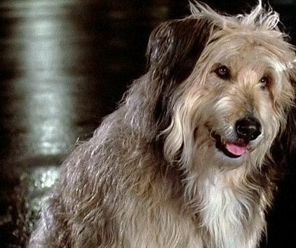
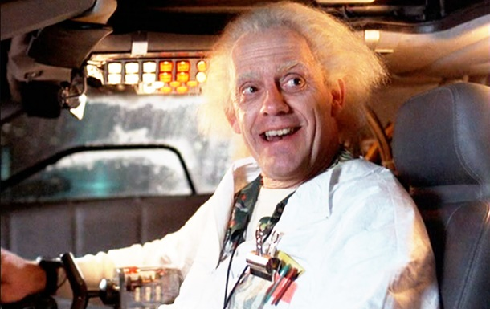

Про що фільм "Назад у майбутнє"
Головний герой фантастичного комедійного фільму «Назад у майбутнє» - сімнадцятирічний підліток на ім'я Марті Макфлай. Він веде самий звичайний спосіб життя, властивий хлопцю його віку. Якось раз, вночі, Марті дзвонить його друг доктор Еммет Браун, якого всі вважають божевільним, і просить приїхати, для участі в якомусь загадковому експерименті. Коли герой приїжджає, то з'ясовується, що доку вдалося створити машину часу, на базі автомобіля DeLorean DMC-12. За його словами, для переміщення, машину лише потрібно розігнати до потрібної швидкості, і вибрати бажану дату. У цей момент з'являються терористи, у яких Браун вкрав плутоній для свого винаходу. Марті не залишається нічого іншого, як рятуватися від переслідування на тій самій Делореан. Так хлопець переміщається з 1985 року, в далекий 1955 рік, коли він навіть ще не народився. І все б нічого, якби не одна маленька проблемка: виявилося, що палива на зворотний тимчасової стрибок у нього немає.
У ролях
- Майкл Джей Фокс (Марті МакФлай)
- Крістофер Ллойд (Емметт Браун)
- Ліа Томпсон (Лоррейн МакФлай)
- Кріспін Гловер (Джордж МакФлай)
- Томас Ф. Вілсон (Біф Таннен)
- Клаудія Веллс (Дженніфер Паркер)
- Марк МакКлюр (Дейв МакФлай)
Оцінки
Цікаві факти про фільм
-
Всі кіностудії в Америці відхилили цей фільм. Крім Діснея
Коли режисер картини Роберт Земекіс шукав кіностудію, яка візьметься за зйомки, він зіткнувся з проблемою. Жодна кіностудія не хотіла братися за зйомки, вважаючи, що ідея подорожі в часі на автомобілі не цікава молоді 80-х років. Тема фільму, на думку критиків студій, була надто м’якою, коли бунтівна молодь у той час вимагала чогось іншого. Але в підсумку режисерові пощастило. Кіностудія Діснея погодилася на зйомки, за однієї умови. Виключити з сценарію сцену поцілунку Марті з матір’ю.
 -
Кожен підліток у світі міг стати Марті Макфлаем
Творці фільму хотіли, щоб роль Макфлая зіграв Майкл Джей Фокс, який був зіркою серіалу “Сімейні узи”. Але творці серіалу зробили все можливе, що актор не зміг ознайомитися зі сценарієм «Назад у майбутнє». У підсумку на роль розглядалися Джонні Депп, Джон Кьюсак і Чарлі Шин, але так і не були затверджені. У якийсь момент творці картини перестали вірити, що знайдуть потрібного актора. У підсумку було вирішено розглядати будь-якого актора з будь-якої країни. На роль Марті також розглядалися такі актори як Крістофер Колле і Роберт Дауні-молодший. Але в кінцевому підсумку актором все-таки став Майкл Джей Фокс.
 -
Спочатку домашнім тваринам Дока Брауна повинна була бути шимпанзе
Початковий сценарій передбачав, що у Дока Брауна будинку живе мавпа. Але виробник кінострічки наполіг, щоб шимпанзе у фільмі не було. На їхню думку, участь у зйомках шимпанзе ніколи не було в кіноіндустрії вдалим. У підсумку мавпа перетворилася на собаку по кличці Ейнштейн.
 -
Спочатку фільм «Назад у майбутнє» повинен був називатися «Космонавт від Плутона»
Продюсер кінострічки Сід Шейнберг ненавидів назву «Назад в майбутнє», не розуміючи, як таке може бути в реальності. На його думку, назва фільму не мало ніякого сенсу. Він запропонував свою назву “Космонавт від Плутона”. Режисер був у паніці від запропонованого варіанту. Для того щоб переконати продюсера залишити оригінальна назва Земекіс звернувся Стівену Спілбергу, який поПорадив скласти план пояснень, детально розповідає, що означає словосполучення «Назад у майбутнє». Також Спілберг поПорадив Земекісу скласти пародійні альтернативні назви на запропоновану продюсером назва фільму. Потім режисер показав ці жарти Сід Шейнбергу, заявивши що вдала вийшла жарт з назвою “Космонавт від Плутона”. Продюсеру нічого не залишалося робити, як погодитися з оригінальною назвою кінострічки, так як він не зміг признатися, що запропоноване ним назва зовсім не жарт.
